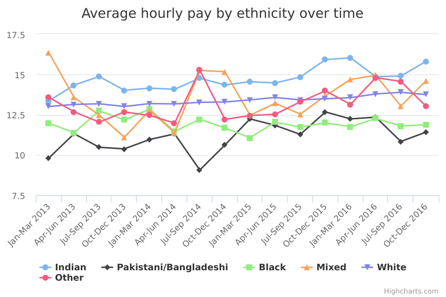

Average hourly pay
The main facts and figures show that:
-
in the last 3 months of 2016, the average hourly pay for all employees was £13.69
-
in the last 3 months of 2016, the average hourly pay for White employees was £13.75, while the average hourly pay for employees from other ethnic groups was £13.18
-
Indian employees earned the highest average hourly pay (£15.81), while Pakistani/Bangladeshi employees earned the lowest average hourly pay (£11.42)
-
on average, employees from Mixed and Indian backgrounds earned more than White employees, whereas Pakistani/Bangladeshi, Black, and Other ethnicity employees earned less
Things you need to know
These figures come from the Labour Force Survey (LFS). The LFS is a study of the employment circumstances of the UK population. It is the largest household study in the UK and provides the official measures of employment and unemployment.
Hourly rates of pay are provided by employees (‘self-reported’). If an individual is not available for interview, someone else in the same household (a ‘proxy’) may answer on their behalf.
Using self-reported and proxy answers carries a risk of error in the figures given. As a result, gross weekly pay and hourly pay in the LFS are known to underestimate the actual rates. For quality assurance, the Office for National Statistics (ONS) excludes estimates of earnings greater than £100 per hour when it publishes results based on the LFS. Such high values are not very common, but they can have a big influence on the mean hourly pay. Excluding them allows the survey to give more accurate estimates of hourly pay for the wider population.
Respondents to this survey are interviewed 5 times - once every 3 months - to give information about changes in the labour market. But they are only asked about their hourly pay on the first and last of these interviews. For this reason, ONS recommends that any short term measurement of change be made with caution.
These findings show the mean (average) hourly pay for employees in each ethnic group. In reality, employees’ pay will reflect factors besides ethnicity, such as the industry they work in and their occupation, qualifications, experience and seniority. Where some employees have much higher incomes than others in the same ethnic group, the mean hourly pay for that ethnic group will be higher. As a result it may not accurately represent the pay of the less well-paid employees in that group.
What the data measures
This data measures the average (‘mean’) gross hourly pay for all employees aged 16 and over in the UK. ‘Gross hourly pay’ is an employee’s hourly pay before any deductions for things like tax and national insurance.
The figures come from the Labour Force Survey (LFS). The survey involves interviews with approximately 100,000 adults in around 40,000 households in the UK. The survey results are used to make estimates for the entire population of the UK.
Why these ethnic categories were chosen
The analysis uses the following broad ethnic categories, based on the 2001 Census:
- White
- Black/Black British
- Mixed
- Indian
- Pakistani/Bangladeshi
- Other (which includes Chinese, Other Asian and other ethnic groups)
Average hourly pay by ethnicity

View the numbers in a table
Average (mean) hourly pay by ethnicity
| Jan-Mar 2013 | Apr-Jun 2013 | Jul-Sep 2013 | Oct-Dec 2013 | Jan-Mar 2014 | Apr-Jun 2014 | Jul-Sep 2014 | Oct-Dec 2014 | Jan-Mar 2015 | Apr-Jun 2015 | Jul-Sep 2015 | Oct-Dec 2015 | Jan-Mar 2016 | Apr-Jun 2016 | Jul-Sep 2016 | Oct-Dec 2016 | |
| Black | 11.97 | 11.39 | 12.74 | 12.18 | 12.85 | 11.46 | 12.22 | 11.68 | 11.07 | 12.04 | 11.73 | 12.00 | 11.75 | 12.27 | 11.80 | 11.88 |
|---|---|---|---|---|---|---|---|---|---|---|---|---|---|---|---|---|
| Indian | 13.36 | 14.34 | 14.87 | 14.02 | 14.15 | 14.08 | 14.77 | 14.35 | 14.55 | 14.47 | 14.84 | 15.92 | 16.03 | 14.86 | 14.90 | 15.81 |
| Mixed | 16.34 | 13.57 | 12.48 | 11.10 | 12.77 | 11.39 | 15.25 | 15.17 | 12.47 | 13.21 | 12.54 | 13.68 | 14.69 | 14.95 | 13.04 | 14.61 |
| Other | 13.57 | 12.68 | 12.04 | 12.67 | 12.46 | 11.98 | 15.27 | 12.21 | 12.45 | 12.53 | 13.30 | 13.98 | 13.14 | 14.80 | 14.57 | 13.03 |
| Pakistani/Bangladeshi | 9.82 | 11.32 | 10.48 | 10.38 | 10.96 | 11.31 | 9.07 | 10.62 | 12.24 | 11.84 | 11.28 | 12.67 | 12.24 | 12.35 | 10.84 | 11.42 |
| White | 13.01 | 13.14 | 13.18 | 13.01 | 13.19 | 13.17 | 13.27 | 13.29 | 13.42 | 13.57 | 13.42 | 13.49 | 13.56 | 13.79 | 13.89 | 13.75 |
Summary
This data shows that:
-
the average hourly pay in the last 3 months of 2016 was £13.69, and the average hourly pay in the same 3 months of 2013 was £12.95
-
in the last 3 months of 2016, Indian employees earned the highest average hourly pay, at £15.81 an hour, while Pakistani and Bangladeshi employees earned the lowest, at £11.42 an hour (a difference of £4.39 an hour)
-
the difference between average earnings among Indian employees and among Pakistani and Bangladeshi employees was wider in the last 3 months of 2016 than it was in the same 3 months of 2013 (£3.64 an hour in 2013)
-
since 2013, the pay of Indian employees has tended to be the highest of all ethnic groups, while the pay of Pakistani and Bangladeshi employees has tended to be the lowest
Methodology and data type
Purpose Of Data Source
The Labour Force Survey (LFS) measures all aspects of people's work, including the education and training needed to equip them for work, the jobs themselves, job search for those out of work, and income from work and benefits.
The primary purpose of the LFS is to provide good quality point in time and change estimates for various labour market outputs and related topics.
Methodology
The data gives estimates of earnings based on the Labour Force Survey (LFS), which are published by the Office for National Statistics.
This analysis uses the ‘mean’ average to report hourly pay. The mean is worked out by adding up the hourly pay of all respondents and dividing by the number of respondents.
The choice of the 'mean' as a measure of average hourly pay is affected by extreme measures which may not reflect some of the lower paid people in each ethnic group. ONS has taken steps to reduce this impact particularly where values over £100 may have been given in error. The alternative was to use the 'median', but this would have been unreliable for ethnic groups where there were small numbers of respondents. (For each ethnic group, if every respondent was lined up in the order of their hourly pay, the median would be the hourly pay of the person in the middle.)
The data on employees’ earnings captured by the LFS is thought to be of a lower quality than other sources, such as the Annual Survey of Hours and Earning (ASHE) and the Average Weekly Earnings (AWE) survey. This is because employees or proxies report the information themselves rather than employers. However, this analysis uses LFS because neither ASHE nor AWE collect data on employees’ ethnicity.
The LFS has been held continuously since 1992. It is designed to produce nationally representative results for any 3-month period.
Each 3-monthly sample in the LFS is made up of 5 waves. The sample consists of approximately 40,000 UK households and 100,000 individuals per quarter. Respondents are interviewed for 5 successive waves at 3-monthly intervals and 20% of the sample is replaced every quarter. Respondents are only asked about their pay in the first and last of these interviews. The response rate for October to December 2016 was 42%.
All surveys carry the risk of biased results if some types of people were less likely to respond than others. To compensate for this, the responses to this survey have been weighted so they better reflect characteristics of the target population. The weighting scheme was designed so that the sample reflects the target population's age and sex profile, as well as its geographic spread (region and local authority).
Data type
Survey
Type of statistic
Other
Suppression rules
Sample sizes of less than 30 have been fully suppressed. Results in excess of £100 an hour have been excluded as a quality assurance measure.
Estimation
Figures have been rounded to the nearest pence.
Further technical information
The data on individual’s earnings captured by the LFS is thought to be of a lower quality than ASHE or AWE as LFS information is self-reported by employees. ASHE and AWE however, gather information from the employer which is thought to be more accurate as employers can consult payroll records. Individuals may not have such records to hand and their responses may therefore be subject to higher levels of recall error. Furthermore LFS responses can be given by proxy (by other individuals in the same household) when an individual is unavailable for interview. This gives further scope for recall error from respondents. Due to this recall error, estimates of earnings based on the LFS that are published by the ONS excluding those who earn more than £100 per hour as a quality assurance measure. These factors combined mean that gross weekly and hourly pay are known to be underestimated on the LFS.
Publishing details
-
Department for Business, Energy and Industrial Strategy
-
n/a
-
March 2018
-
Ad-hoc